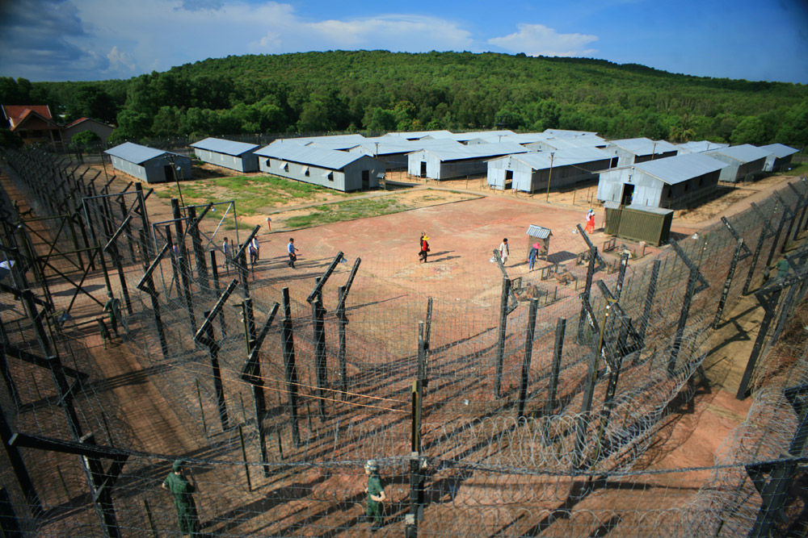
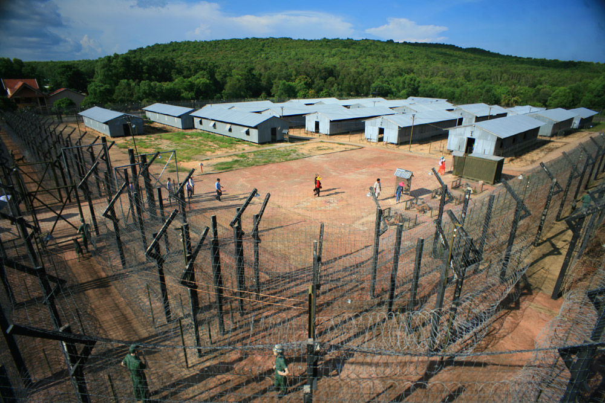
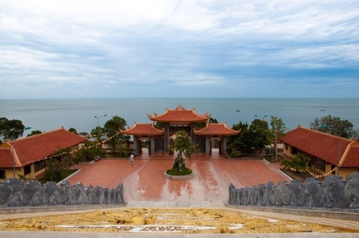
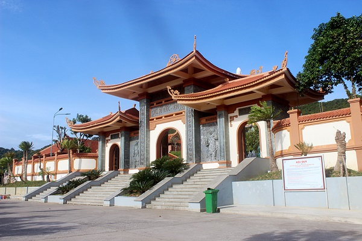
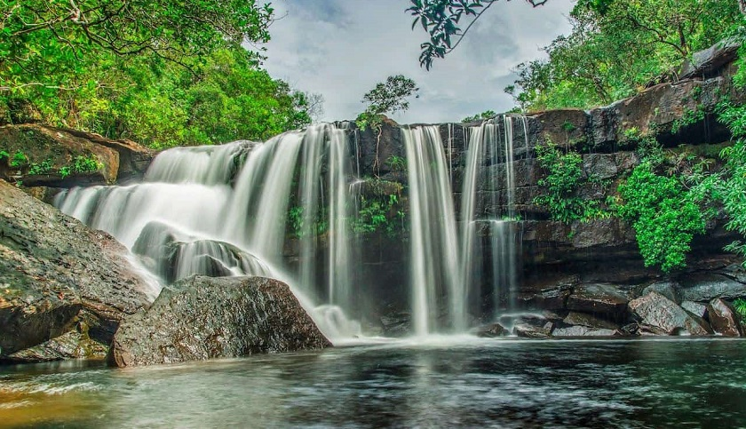
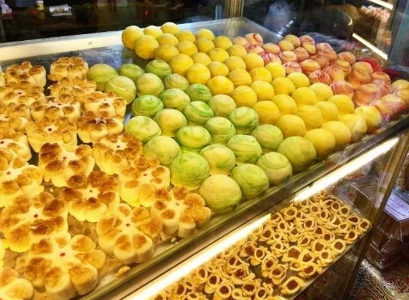
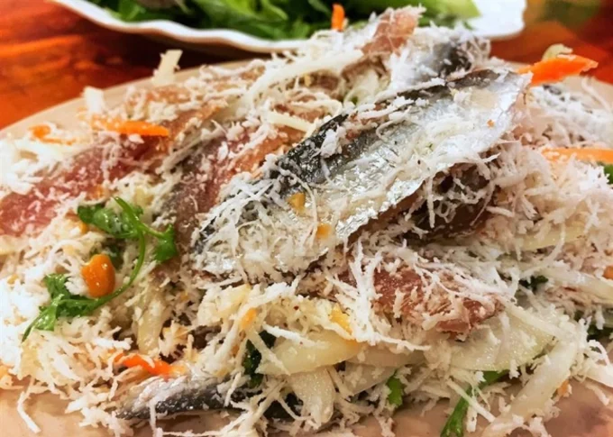
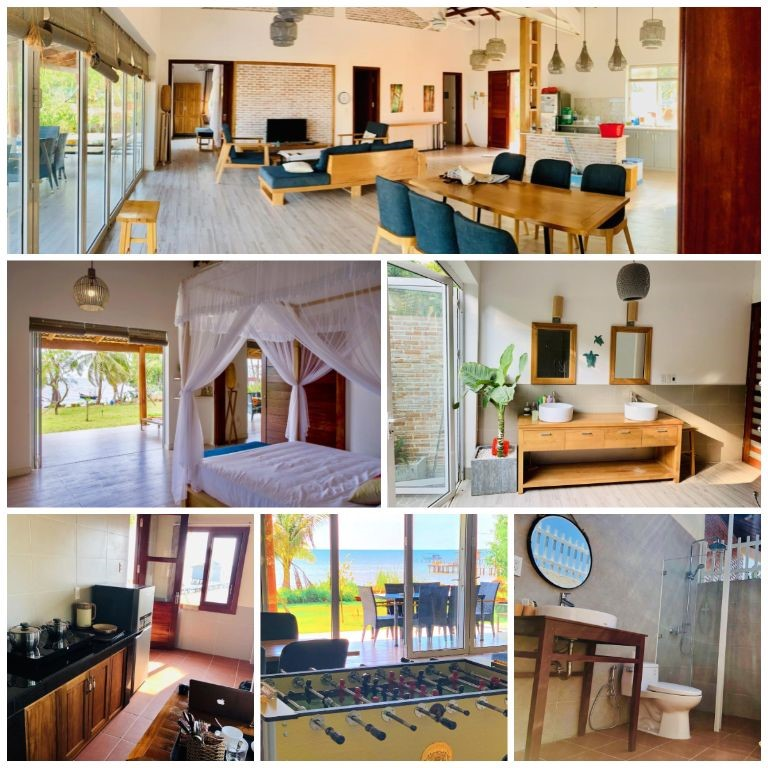
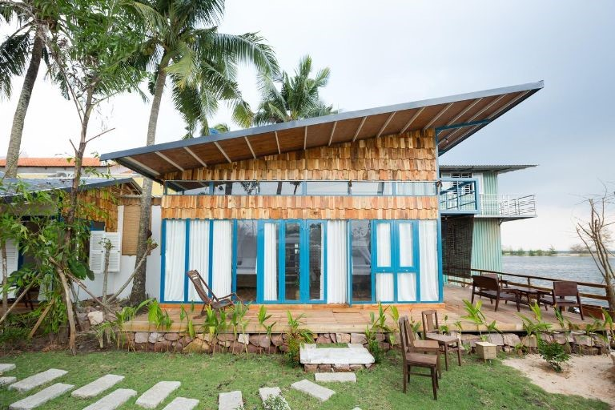
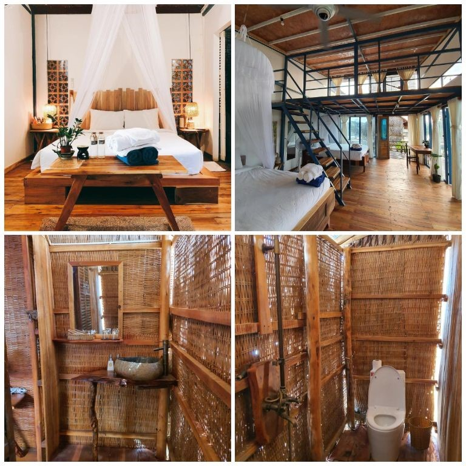

Giới thiệu
Phú Quốc là hòn đảo lớn nhất Việt Nam, nằm trong vịnh Thái Lan. Đảo Phú Quốc cùng với các đảo nhỏ hơn ở lân cận và quần đảo Thổ Chu nằm cách đó 55 hải lý về phía tây nam hợp thành thành phố Phú Quốc thuộc tỉnh Kiên Giang. Đây cũng là thành phố đảo đầu tiên của Việt Nam.Sở hữu những triền cát trắng trải dài, bãi biển trong vắt bên đại dương xanh thẳm, vườn quốc gia phong phú và những làng chài bình yên, đảo Phú Quốc (tỉnh Kiên Giang) được coi là lựa chọn lý tưởng cho du khách.Với 150 km đường bờ biển, Phú Quốc sở hữu nhiều bãi biển đẹp trải dài từ phía bắc đến phía nam. Đến đây, du khách sẽ bị cuốn hút trước vẻ đẹp đậm chất hoang sơ với sóng êm, gió lặng tại bãi Sao hay không gian trầm mặc kín đáo, biển xanh cát trắng tại bãi Khem. Du khách cũng có thể đến bãi Trường để đắm mình trong làn nước mát lạnh hay thả bộ chân trần trên cát, ngắm hoàng hôn buông dần trên biển. Đặc biệt, với cảnh quan nên thơ, trữ tình, cát vàng tự nhiên, rừng già đại thụ lan tận sát biển cùng hệ sinh thái rừng ngập mặn tuyệt đẹp tại các cửa sông nhỏ, bãi Dài đứng đầu danh sách các bãi biển tiềm ẩn được các hãng thông tấn cũng như du khách nước ngoài đánh giá và bình chọn là một trong 5 bãi biển đẹp nhất thế giới. Ngoài ra, các bãi Gành Dầu, Ông Lang, Vũng Bầu, Cửa Cạn hay hòn Móng Tay, Đồi Mồi, hòn Thơm, hòn Dăm… cũng rất hấp dẫn du khách. Đây là địa điểm lý tưởng cho các hoạt động tắm biển, du thuyền, câu cá, câu mực, lặn biển ngắm san hô, các môn thể thao nước, dã ngoại, khám phá đảo…

Các địa điểm văn hóa hay khu vui chơi di tích
1. Nhà tù Phú Quốc(nhà lao cây dừa):
-Địa chỉ: 350 Nguyễn Văn Cừ, thị trấn An Thới, huyện Phú Quốc.
Năm 1946, thực dân Pháp chiếm đóng Phú Quốc và chọn đây làm nơi xây dựng nhà tù lớn nhất Đông Nam Á nhằm mục đích giam cầm các chiến sĩ cách mạng. Đến giữa năm 1953, chúng tận dụng doanh trại của bọn Trung Hoa Quốc dân đảng để xây dựng nhà tù. Lúc đó, nhà tù Phú Quốc gọi là Căng Cây Dừa. Nhà tù Phú Quốc là di tích lịch sử cách mạng hào hùng của dân tộc Việt Nam trong thời kỳ chống thực dân Pháp và đế quốc Mỹ. Đây không chỉ là nơi minh chứng cho cuộc đấu tranh đầy gian khổ mà còn thể hiện ý chí kiên cường, bất khuất của dân tộc ta trong cuộc đấu tranh giành độc lập.
 

2. Thiền viện Trúc Lâm – chùa Hộ Quốc
-Địa chỉ: Dương Tơ, Phú Quốc, Kiên Giang

Nằm tại ấp Suối Lớn của xã Dương Tơ huyện Phú Quốc. Chùa Hộ Quốc hay thiền viện Trúc Lâm Hồ Quốc là ngôi chùa có quy mô lớn nhất tại Phú Quốc cũng như trên đồng bằng sông Cửu Long. Đặc biệt, chùa Hộ Quốc là ngôi chùa được xây dựng trên một vị thế rất đặc biệt mà không phải chùa nào cũng có. Với địa thế phong thủy mặt hướng biển, lưng tựa núi và hai bên tả hữu là con đường thông thoáng dẫn đến các trung tâm lớn. Chùa Hộ Quốc thật chất là ngôi chùa đang được đánh giá là ngôi chùa trong những ngôi chùa có địa thế đẹp nhất Việt Nam.

3. Khu Du Lịch Sinh Thái Suối Tranh

Địa chỉ: Khu du lịch Suối Tranh, ấp Suối Mây, xã Dương Tơ, tỉnh Phú Quốc.
Suối Tranh Phú Quốc là nơi tham quan lý tưởng cho du khách, nằm cách trung tâm thị Dương Đông khoảng 9km về phía Đông. Trước kia Suối còn rất hoang sơ và là một trong những điểm nghỉ ngơi giải trí của dân địa phương sau những ngày làm việc mệt mỏi và mỗi khi có lễ hội lớn trên đảo.Bên cạnh đó, Từ chân suối du khách đi theo đường lát đá gập ghềnh lên nguồn 300m để khám phá thiên nhiên kỳ bí, cắm trại, tắm suối – thác và nghỉ ngơi thư giãn giữa hương rừng. Có đoạn suối chảy qua các ghềnh đá tạo nên những con thác mềm mại, trắng xóa trong màu xanh mượt mà của cỏ cây hoa lá. Khung cảnh tựa như bức tranh thiên nhiên tuyệt đẹp nên người ta gọi là Suối Tranh.

Ẩm thực
1. Bánh Khéo
Ắt hẳn bạn từng nghe đến bánh khéo – một trong những món ăn vặt nổi tiếng của Phú Quốc. Sở dĩ được gọi là bánh khéo vì để làm ra được những chiếc bánh be bé xinh xinh với đủ màu sắc hấp dẫn, người nặn bánh phải khéo léo và tỉ mỉ đến từng chi tiết. Hình dáng đáng yêu, bên trong bánh được nhân dừa, đậu xanh, khoai môn... Bánh có hương vị ngọt thanh, ít béo, có thể ăn bánh chung với uống trà rất ngon. Đây là món ngon Phú Quốc thích hợp làm quà tặng. Thẳng tiến đến quán Cô Dung, 43, 30 tháng 4, Dương Đông, để thưởng thức ngay thôi.

2. Gỏi Cá Trích Phú Quốc
Gỏi cá trích Phú Quốc là món ăn đặc sản nổi tiếng với hương vị lạ miệng. Sự kết hợp hài hòa giữa thịt cá tươi sống được lấy từ phần lườn hai bên để bóp gỏi, và các nguyên liệu dừa nạo, hành tây, hành tím thái mỏng, ớt thái mỏng tạo nên độ ngọt béo cay cay vừa phải. Nếu bạn muốn thưởng thức món gỏi cá trích Phú Quốc lừng danh, hãy ghé đến Nhà hàng Vườn Táo- số 1 đường Trần Hưng Đạo, Dương Tơ, Phú Quốc nhé!

3. Bún Kèn
Ngoài những đặc sản quen thuộc như chả cua, nước mắm v.v... còn một món đặc sản Phú Quốc bạn không thể bỏ qua chính là bún kèn. Dù ít được nhắc đến trong danh sách những món ẩm thực Việt Nam, nhưng bún kèn là món ăn khá phổ biến trong bữa cơm của các gia đình Phú Quốc. Bún kèn được nấu từ cá nhàu hay cá ngân dầm nhuyễn rồi chiên giòn. Sau đó cho nước cốt dừa, nước cá luộc, đu đủ, rau thơm, ớt đỏ trộn cùng nhau tạo nên tô bún kèn Phú Quốc “ăn một lần là nhớ mãi". Điểm bán bún kèn ngon có thể kể đến là tiệm Út Lượm, 87 30 tháng 4, thị trấn Dương Đông.

Lịch sử
Phú Quốc là hòn đảo lớn nhất của Việt Nam, với một lịch sử hình thành vô cùng thú vị, gắn liền với dòng họ Mạc những ngày đầu khai hoang trên mảnh đất này. Đảo Phú Quốc , cũng giống như Việt Nam, có một trang sử đầy vẻ vang trong hành trình đấu tranh và bảo vệ đất nước, chống lại sự xâm lược của người Pháp, Campuchia, Thái Lan, và người Mỹ. Hòn đảo này cũng có một giai đoạn “bị diệt chủng”, nhưng trên một quy mô nhỏ hơn so với nước láng giềng Campuchia. Cư dân ban đầu của hòn đảo đến từ nhiều vùng khác nhau như:Trung Quốc, Khmer, Pháp, và Việt Nam
Review khách sạn, homestay
1. 9 Station Hostel – Homestay Phú Quốc
Địa Điểm : 91/3 Đường Trần Hưng Đạo, Khu phố 7, Phú Quốc
Tọa lạc tại quận Long Beach ở Dương Đông, nằm trong khu trung tâm thương mại và du lịch đảo Phú Quốc chỉ cách biển khoảng vài phút đi bộ. 9 Station Hotel là địa điểm lý tưởng cho du khách đến nghỉ ngơi và tham quan tại Phú Quốc.9 Station Hostel có rất nhiều phòng cho mọi người lựa chọn như đi đơn, đi nhóm, đi đôi, gia đình. Tất cả các phòng đều được đầu tư trang thiết bị vô cùng hoàn hảo.Bên cạnh đó , 9 Station Hostel còn có hồ bơi ngoài trời cho du khách với thiết kế sang chảnh không thua kém bất kỳ các resort đắt tiền. Dù không quá rộng nhưng cũng đủ để cho bạn nghỉ ngơi, đọc sách, tắm nắng…Những tiện ích đẳng cấp phục vụ khách như quầy bar, bida, nhà hàng,…
2. Lotus Home
Địa chỉ: Tổ 5 Cây Sao, Hàm Ninh, Phú Quốc
Được xây dựng bềnh bồng giữa biển tạo sự khác biệt cho các homestay khách tại Phú Quốc. Lotus Home được ví như một bông sen bồng bềnh giữa biển khơi.
Với vị trí thuận lợi từ Lotus Home du khách có thể đi bộ ra ra bãi biển ngắm hoàng hôn. Cảm nhận sự yên biển, thoải mái mà biển cả mang lại. Tại đây du khách cũng thuận tiện bắt xe để đi tới các địa điểm du lịch nổi tiếng khác.

3. Phú Quốc Ecolodge
Địa chỉ: Cửa Cạn, Phú Quốc, tỉnh Kiên Giang

Là một trong số những homestay dành cho gia đình có view đẹp nhất ở Phú Quốc. Phú Quốc Ecolodge có khoảng không gian vườn rộng thoáng mát bát có thể ngồi đó uống một tách trà và tận hưởng cảm giác thư thái.Không gian bên ngoài có view tuyệt đẹp và đầy lãng mạn. Ở đây buổi tối có đốt lửa trại và tổ chức tiệc BBQ cho du khách tận hưởng cảm giác ấm ấp bên gia đình.Phú Quốc Ecolodge có 10 bungalow được thiết kế chủ yếu bằng gỗ được bày trí đơn giản, nhẹ nhàng nhưng không kém phần sang trọng. Bên trong mỗi phòng đều có phòng tắm riêng và khu vệ sinh khép kín. Xây dựng cửa kính lớn hướng ra sân tạo nên không gian xanh thoải mái, thư thái mỗi khi thức dậy.
